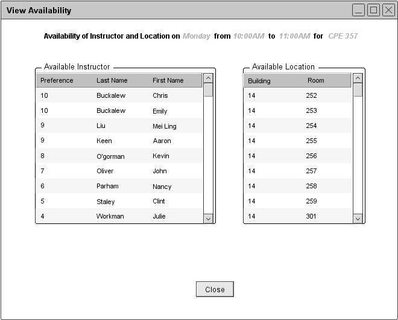

Users have the ability to view the availibility of every instructor and location at a partucular time. By clicking on the More... option in a calendar cell, a small window pops up with the information of that particular cell, as show in Figure 75. This popup also includes a link to view availability of instructors and locations. By clicking View Availability link on the bottom right, a new dialog opens up with two lists of available instructors and locations. See Figure 91. The window shows the day, start time, end time, and the course information on the top.
By default, the Instructors list is sorted by instructor preference and the Location list by building number. Users have the ability to sort each list by clicking on the title of each column.

Figure 91: Availability of instructors and locations